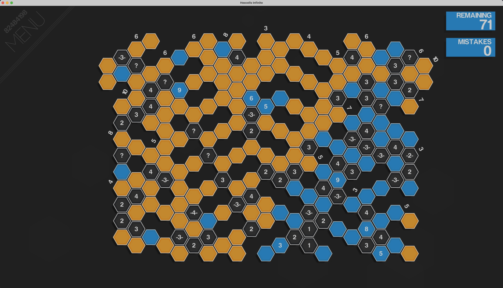

Source: docs/screenshots/hexcells-infinite-board.jpg (2302 x 1319 px)
Colored rectangles highlight regions containing examples of each element type. Labels appear at the edge of each region. See the legend below for full descriptions.

3), curly-braced
({3}), or dashed (-3-) — see Number Types below.
Some cells show ? instead, meaning no clue is available.
3)
A bare number inside an open cell or at a line endpoint. For cells:
how many of six neighbors are filled. For lines: total filled count.
No contiguity information — filled cells could be in any arrangement.
Visible throughout the dark cell corridors (region C).
{n}) — Contiguous
All filled cells form a single connected group — no gaps. For neighbor
clues: an unbroken arc around the cell. For line clues: a single run along
the line. A stronger constraint than a plain number.
-n-) — Discontiguous
Filled cells are not all in one group. At least one gap
separates them into two or more clusters. Subsets within a cluster can be
adjacent. Visible on cells showing e.g. -3- or -4-
in the dark corridors.
Identify all filled (mined) cells on the hex grid using logical deduction from clue numbers. Mark filled cells (they turn blue). Open empty cells (they reveal their dark interior and possibly a clue number).
Two actions trigger a mistake: opening a cell that is actually filled (mined), or marking a cell as filled when it is actually empty. The goal is zero mistakes.
A number inside an open empty cell tells you how many of its six immediate
hex neighbors are filled. Modified by {} (contiguous) or
- - (discontiguous) notation.
A number inside a blue (filled) cell is a "flower." It counts filled cells within a 2-hex radius — the 18 cells in the two concentric rings around it, not just the 6 immediate neighbors. Same contiguity modifiers apply.
Numbers at the end of a column or diagonal indicate the total filled count along that line. Appear at the top edge, left/right sides, and also inside the grid in missing hex positions (counting a partial line from that point to the grid edge). Same contiguity modifiers apply.
{n}Curly braces guarantee all filled cells form one connected group — no gaps in the ring of neighbors or along the line.
-n-Dashes guarantee the filled cells are split into 2+ separate groups. At least one gap must exist between them.
Irregular organic boundary. Some hex positions are missing entirely (grey outlines). Missing hexes aren't interactive but affect neighbor counts and line clue totals.
Flat-top hexagons. Flat edges on top and bottom; vertices point left and right. Offset-column stagger.